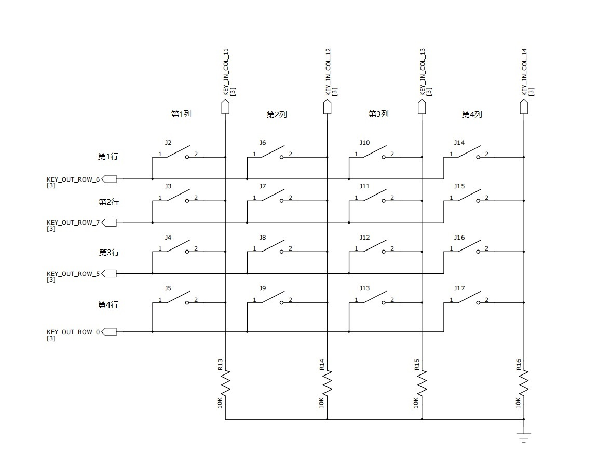

11 硬件键盘扫描控制器（KEYSCAN）
11.1 功能概述
特性：
- 可配置矩阵，最大支持18行*18列的键盘矩阵。
- 每个单独的行或者列可以设置启用或者禁用。
- 可配置时钟。
- 支持输入硬件去抖动，去抖时间可配置。
- 支持配置扫描间隔和释放时间，支持多按键同时按下。
- 支持中断和DMA。
11.2 使用说明
以4行*4列的键盘矩阵为例：

11.2.1 键盘矩阵的软件描述
typedef struct {
KEYSCAN_InColIndex_t in_col;
GIO_Index_t gpio;
} KEYSCAN_InColList;
typedef struct {
KEYSCAN_OutRowIndex_t out_row;
GIO_Index_t gpio;
} KEYSCAN_OutRowList;KEYSCAN_OutRowList key_out_row[] = {
{KEY_OUT_ROW_6, GIO_GPIO_32}, // 第1行
{KEY_OUT_ROW_7, GIO_GPIO_33}, // 第2行
{KEY_OUT_ROW_5, GIO_GPIO_31}, // 第3行
{KEY_OUT_ROW_0, GIO_GPIO_23}, // 第4行
};
#define key_out_row_num (sizeof(key_out_row) / sizeof(key_out_row[0]))
KEYSCAN_InColList key_in_col[] = {
{KEY_IN_COL_11, GIO_GPIO_11}, // 第1列
{KEY_IN_COL_12, GIO_GPIO_12}, // 第2列
{KEY_IN_COL_13, GIO_GPIO_13}, // 第3列
{KEY_IN_COL_14, GIO_GPIO_14}, // 第4列
};
#define key_in_col_num (sizeof(key_in_col) / sizeof(key_in_col[0]))第1行按键接到了GPIO32，映射到KEYSCAN模块的ROW6。第1列按键接到了GPIO11，映射到KEYSCAN模块的COL11。以此类推4行4列的键盘阵列。
注意：KEYSCAN的ROW和COL不是随意映射到GPIO，映射关系参考管脚管理（PINCTRL）说明文档。
11.2.2 KEYSCAN模块初始化
typedef struct {
KEYSCAN_InColList *col;
int col_num;
KEYSCAN_OutRowList *row;
int row_num;
uint8_t fifo_num_trig_int;
uint8_t dma_num_trig_int;
uint8_t dma_en;
uint8_t int_trig_en;
uint16_t release_time;
uint16_t scan_interval;
uint8_t debounce_counter;
} KEYSCAN_SetStateStruct;/**
* @brief Initialize keyscan module
*
* @param[in] keyscan_set Initial parameter struct
* @return 0 if success else non-0
*/
int KEYSCAN_Initialize(const KEYSCAN_SetStateStruct* keyscan_set);
/**
* @brief Initialize mapping table of keyboard array row and col
*
* @param[in] keyscan_set Initial parameter struct
* @param[out] ctx keyboard array mapping table
*/
void KEYSCAN_InitKeyScanToIdx(const KEYSCAN_SetStateStruct* keyscan_set,
KEYSCAN_Ctx *ctx);11.2.3 获取扫描到的按键
KEYSCAN模块使能扫描后会按照行和列的配置开始扫描。模块有FIFO缓存扫描数据。每次扫描循环结束，FIFO中压入1个0x400标志完成一次扫描。
可以配置FIFO中数据个数触发中断或者DMA触发中断：
void KEYSCAN_SetFifoNumTrigInt(uint32_t trig_num);
void KEYSCAN_SetDmaNumTrigInt(uint32_t trig_num);获取FIFO是否为空的状态和数据：
/**
* @brief Check keyscan FIFO empty or not
*
* @return 0: FIFO have data; 1: empty
*/
uint8_t KEYSCAN_GetIntStateFifoEmptyRaw(void);
/**
* @brief GET keyscan FIFO data
*
* @return 0~4 bits: col; 5~9 bits: row; 10 bit: scan cycle end flag
*/
uint16_t KEYSCAN_GetKeyData(void);按键FIFO原始数据的0~4位是按下按键所在的KEYSCAN模块中的col，5~9位是row，注意这个值并不是键盘矩阵中的行和列，可以用下面接口将原始数据解析为键盘矩阵中的行和列：
/**
* @brief Transfer keyscan FIFO raw data to keyboard array row and col
*
* To use this helper function, `ctx` must be initialized with `KEYSCAN_InitKeyScanToIdx`.
*
* @param[in] ctx keyboard array mapping table
* @param[in] key_data keyscan FIFO raw data
* @param[out] row pressed key's 0-based row index in keyboard array
* @param[out] col pressed key's 0-based col index in keyboard array
* @return 0: scan cycle end data;
* 1: find key pressed, *row and *col are key positions in keyboard array
*/
uint8_t KEYSCAN_KeyDataToRowColIdx(const KEYSCAN_Ctx *ctx, uint32_t key_data,
uint8_t *row, uint8_t *col);11.3 应用举例
11.3.1 初始化KEYSCAN模块
KEYSCAN_OutRowList key_out_row[] = {
{KEY_OUT_ROW_6, GIO_GPIO_32}, // 第1行
{KEY_OUT_ROW_7, GIO_GPIO_33}, // 第2行
{KEY_OUT_ROW_5, GIO_GPIO_31}, // 第3行
{KEY_OUT_ROW_0, GIO_GPIO_23}, // 第4行
};
#define key_out_row_num (sizeof(key_out_row) / sizeof(key_out_row[0]))
KEYSCAN_InColList key_in_col[] = {
{KEY_IN_COL_11, GIO_GPIO_11}, // 第1列
{KEY_IN_COL_12, GIO_GPIO_12}, // 第2列
{KEY_IN_COL_13, GIO_GPIO_13}, // 第3列
{KEY_IN_COL_14, GIO_GPIO_14}, // 第4列
};
#define key_in_col_num (sizeof(key_in_col) / sizeof(key_in_col[0]))
static KEYSCAN_Ctx key_ctx = {0};
static KEYSCAN_SetStateStruct keyscan_set = {
.col = key_in_col,
.col_num = key_in_col_num,
.row = key_out_row,
.row_num = key_out_row_num,
.fifo_num_trig_int = 1,
.release_time = 110,
.scan_interval = 0xFFFF,
.debounce_counter = 50,
.dma_num_trig_int = 0x10,
.dma_en = 0,
.int_trig_en = 1,
};
static uint32_t keyscan_cb_isr(void *user_data);
static void setup_peripherals_keyscan(void)
{
SYSCTRL_ClearClkGateMulti(1 << SYSCTRL_ITEM_APB_KeyScan);
SYSCTRL_ClearClkGateMulti(1 << SYSCTRL_ITEM_APB_PinCtrl);
KEYSCAN_Initialize(&keyscan_set);
KEYSCAN_InitKeyScanToIdx(&keyscan_set, &key_ctx);
platform_set_irq_callback(PLATFORM_CB_IRQ_KEYSCAN, keyscan_cb_isr, 0);
return;
}11.3.2 中断数据处理
static uint8_t key_state_buf[2][key_out_row_num][key_in_col_num] = {0};
static uint8_t key_state_last_index = 0;
static uint8_t key_state_now_index = 1;
static void printf_key_state(void)
{
int row, col;
for (row = 0; row < key_out_row_num; row++) {
for (col = 0; col < key_in_col_num; col++) {
if (key_state_buf[key_state_now_index][row][col] !=
key_state_buf[key_state_last_index][row][col]) {
printf("row%u col%u %s\r\n",
row + 1, col + 1,
key_state_buf[key_state_now_index][row][col] == 0 ?
"release" : "press");
}
}
}
if (key_state_now_index == 0) {
key_state_now_index = 1;
key_state_last_index = 0;
} else {
key_state_now_index = 0;
key_state_last_index = 1;
}
for (row = 0; row < key_out_row_num; row++) {
for (col = 0; col < key_in_col_num; col++) {
key_state_buf[key_state_now_index][row][col] = 0;
}
}
return;
}
static void key_state_clear(void)
{
int row, col;
for (row = 0; row < key_out_row_num; row++) {
for (col = 0; col < key_in_col_num; col++) {
key_state_buf[0][row][col] = 0;
key_state_buf[1][row][col] = 0;
}
}
}
static uint32_t keyscan_cb_isr(void *user_data)
{
uint32_t key_data;
uint8_t key_scan_row;
uint8_t key_scan_col;
uint8_t row = 0;
uint8_t col = 0;
static uint8_t have_key_pressed = 0;
static uint8_t no_key_pressed_cnt = 0;
while (KEYSCAN_GetIntStateFifoEmptyRaw() == 0) {
key_data = KEYSCAN_GetKeyData();
if (KEYSCAN_KeyDataToRowColIdx(&key_ctx, key_data, &row, &col)) {
// 扫描到有按键按下 按键位置为 row col
key_state_buf[key_state_now_index][row][col] = 1;
have_key_pressed = 1;
} else {
// 完成一次扫描 根据have_key_pressed判断该轮扫描中是否有按键按下
if (have_key_pressed == 1) {
have_key_pressed = 0;
no_key_pressed_cnt = 0;
} else {
}
switch (no_key_pressed_cnt) {
case 0: // 该轮扫描中有按键按下
no_key_pressed_cnt++;
printf_key_state();
break;
case 1: // 该轮扫描中没有按键按下 上一轮扫描中有按键按下 说明按键释放
no_key_pressed_cnt++;
printf_key_state();
key_state_clear();
break;
case 2: // 连续两轮或以上都没有按键按下
break;
default:
break;
}
}
}
return 0;
}